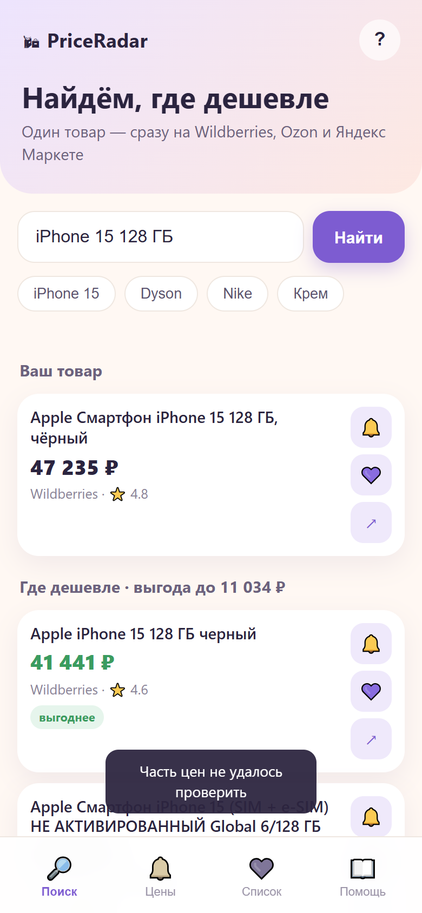

🔎
Три площадки сразу
Wildberries, Ozon и Яндекс Маркет — по ссылке или названию.
💰
Выгода в рублях
Показываю не только «где дешевле», но и сколько можно сэкономить.
🔔
Слежу за ценой
Уведомление, когда цена снизилась.
🕘
История поиска
Последние запросы — в один тап.
📤
Поделиться ссылкой
Из Wildberries или Ozon — сразу в сравнение.
💜
Правило 24 часов
Через сутки спрошу: «всё ещё нужно?» — против импульсивных покупок.


Как установить
- Скачайте APK по кнопке выше.
- Откройте файл на телефоне.
- Разрешите установку из неизвестных источников.
- Выключите VPN и запустите приложение.
Почему без VPN: в России Telegram работает только через VPN, а маркетплейсы VPN блокируют. PriceRadar — отдельное приложение, ему VPN не нужен и мешает.
Частые вопросы
Почему нет Мегамаркета?
Он почти всегда отдаёт капчу. Показываю только площадки, которые ответили.
Ozon не отвечает — что делать?
У Ozon бывает антибот. Подождите минуту или вставьте прямую ссылку на товар.
Где хранятся данные?
Только на телефоне. Нет аккаунта, сервера и аналитики.
Как обновляться?
Скачайте новый APK с этой страницы — данные сохранятся, ключ подписи тот же.